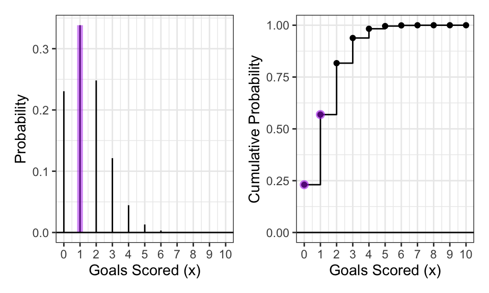
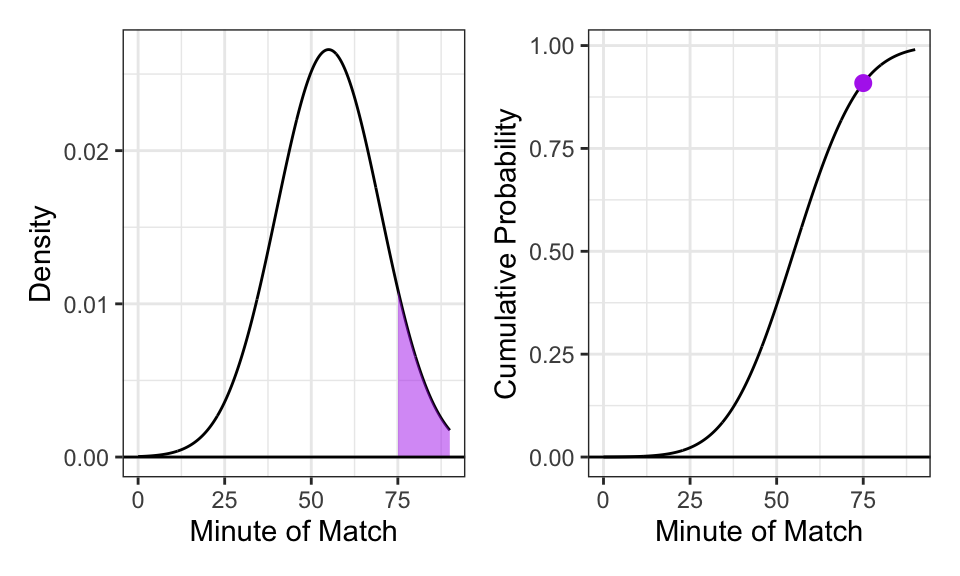

Unit 3 - Everything You Need to Know About General Probability Distributions
1 Introduction to Probability
In data science, we oftentimes are unable to see the whole picture. This is largely due to the fact that being able to attain data of entire country, population, or demographic can both be extremely time consuming and expensive. Due to this, we work with samples which show a small glimpse of a larger reality. The goal of probability is to take these samples and guess the blueprint of the entire population.
To accomplish this we will follow this guideline:
Establish What a Random Variable Is
Dive Into the Discrete Distribution
Dive Into the Continuous Distribution
2 The Random Variable
The way to describe the blueprint is to use two ideas, namely the random variable and the support
The random variable is like a numerical bridge. It takes a real-world event (like a car crash) and turns it into a number (\(X\)). It is can be a characteristic, attribute, measurement, or any descriptive piece of data to depict an observation.
Additionally, when talking about random variables, you have to mention the Support. The Support is the list of “allowable” realities. If you are at a restaurant, the Support is the menu (everything you could order). The Distribution is the record of what people actually ordered.
The random variable can take on different forms either being classified as quantitative or categorical
A Quantitative variable implies that the data assumes numerical values.
A Categorical variable implies the data are grouped (either by a common attribute, or category, or species, or any other grouping descriptor). Examples include: the species of an animal.
For our purposes, we will be looking specifically at Quantitative variables. Quantitative variables can take on two forms (or Distributions) amongst themselves. They are either:
Discrete - Implies the variable can be counted (e.g., 1, 2, 3, 4, or the number goals scored in a sporting game).
Continuous - Implies the variable can take on an infinite number of values in a given range. Continuous variables can represent any value along a continuum or spectrum, such as time, weight, or distance as opposed to being measured in whole numbers.
3 The Discrete Distribution
When our support (or “menu”) consists of distinct, countable outcomes (like the number of goals in a match or relapses in a year) we use Discrete models. Discrete models use three different tools to illustrate how the data looks.
The first is called the Probability Mass Function (PMF). It answers the question: “What are the odds of seeing exactly \(x\)?”. An example for this could be if you flipped a coin 10 times, what are the odds of landing on heads exactly six times. Mathematically, we define this as:
\[f_X(x) = P(X = x)\]
The second tool is called the Cumulative Density Function (CDF). A lot of times, data analysts dont’t care about the probability of being “exactly 2,” but they care about a wide range of possibilities. A more common question would be: “What is the probability there are at most two goals scored in a game.” This is the Cumulative Distribution Function (CDF). It acts as a running sum of our PMF. Mathematically it can be defined as:
The final tool for the discrete distribution is the Inverse CDF. In the soccer example, the CDF tells you: “What is the probability of scoring 2 or fewer goals?” The Inverse CDF flips the script and shows: “How many goals do I need to score to be in the top 10% of teams?” The mathematical definition is:
To illustrate the discrete distribution and it’s tools, I used data from the English Premiere League from (English Premier League 2024) to collect data on the number of goals scored per match. The data follows a Poisson Distribution with lambda = 1.39.
Code
# loaded data as epl_rawepl_raw <-read_csv("E0.csv")# Got number of goals and combined home and away into one 'population'epl_goals <- epl_raw |>select(FTHG, FTAG) |>pivot_longer(cols =everything(), names_to ="team_type", values_to ="goals_scored")# Calc avg goal rate (Lambda)avg_goals <-mean(epl_goals$goals_scored)
Visualizing the probability of scoring exactly 1 goal (PMF) and at most 1 goal (CDF)

The PMF (left plot) shows the probability of a game having exactly one goal scored in the game highlighted in purple. The mathematical equation to represent that can be seen below: \[f_X(1) = P(X = 1)\]
The CDF (right plot) shows the probability of a game having at most one goal scored. Notice how in the CDF, the height of the line is the summation of the individual probabilities illustrated in the left plot. This can be seen as the probability of zero goals being scored is about 0.23. The probability of one goal being scored is about 0.35. The probability of at most one goal being scored (one goal or zero goals) is equal to 0.58 which is a summation of the first two numbers. The mathematical equation can be seen below: \[F_X(1) = P(X \leq 1) = \sum_{i \in S, i \leq x} f_X(i)\]
4 The Continuous Distribution
Now let’s switch our focus to the continuous distribution (when the variable can take on an infinite number of values in a given range). Similar to the discrete model, continuous models also use three different tools to illustrate how the data looks.
Before we look at any of the tools, there is a caveat with the continuous distribution. If I asked “What is the probability that a goal is scored at exactly 45 minutes and zero seconds,” the mathematical answer would be zero. This is because time (or any other variable along a continuum) is infinitely divisible. What this essentially means is that the probability of getting a single, infinitely thin point, is non-existent.
So why do we care? This idea has a large impact on the first continuous tool known as the Probability Densitiy Function (PDF). Unlike the PMF, where the height of the line is the probability, the height of a PDF (\(f_X(x)\)) is just density. The mathematical definition for the PDF is a little bit different. To actually calculate the probability of an event happening, we evaluate the area under the curve: \[P(a \leq X \leq b) = \int_{a}^{b} f_X(x) dx\] With the PDF, notice that if you are evaluating the probability of an event taking place at the exact 45th minute, a and be would both equal 45. With that the integral would be evaluating a period from 45 minutes to 45 minutes which in reality equals a “single, infinitely thin point” which has a probability of zero
The second tool, similar to the discrete distribution is called the Cumulative Density Function (CDF). The CDF (\(F_X(x)\)) is a smoother version of the staircase plot seen in the soccer goal counts. This is because it again is a sum of all of the infintecimally small probabilities before rather than just looking at the sums of whole numbers which lead to the jagged, stairlike CDF in the discrete case. It represents the total accumulated area from the start of the match up to time \(x\). The mathematical definition for the continuous CDF is: \[F_X(x) = \int_{-\infty}^{x} f_X(t) dt\]
Similarly to the discrete case, the final tool is called the Inverse CDF. While the CDF tells us the probability of an event happening by a certain time, the Inverse CDF (\(F_X^{-1}(p)\)) does the opposite. The inverse CDF tells us exactly when an event will happen for a given probability. In our example relating to soccer matches and timing, an analyst might ask: “by what minute have 75% of all goals typically been scored?” To answer this, we look for the 75th percentile, similar to how we did in the discrete case. The mathematical definiton for it would be: \[x = F_X^{-1}(p)\]
To illustrate the continuous distribution and it’s tools, I simulated data to show the probability of scoring at different times throughout the game as opposed to just simply the number of goals shown in the discrete case. Typically, the timing of goals is modeled on a uniform distribution (the same probability of scoring a goal at every interval of time throughout the game). This distribution would be simply a flat horizontal line in the PDF and upward slanting straight line in the CDF. This however is ultimately a pretty boring, uninsightful plot, so I decided to investigate a scenario where more goals are scored toward the end of halves due to player fatigue and tactical changes. This yields a normal (or guassian) type of continuous distribution which allows for a much more digestible plot.
Code
mu <-55# Aribratily picked peak scoring timesigma <-15# Aribitrarily picked sd of timing# created theoretical density ggdat <-tibble(x =seq(0, 90, length.out =1000)) |>mutate(PDF =dnorm(x, mean = mu, sd = sigma),CDF =pnorm(x, mean = mu, sd = sigma))# created PDF plotPDF.plot <-ggplot(ggdat) +geom_line(aes(x = x, y = PDF)) +# highlighted goals scored after 75 minutesgeom_ribbon(data = ggdat |>filter(x >75),aes(x = x, ymin =0, ymax = PDF),fill ="darkorchid2", alpha =0.50) +geom_hline(yintercept =0) +xlab("Minute of Match") +ylab("Density") +theme_bw()# created CDF plotCDF.plot <-ggplot(ggdat) +geom_line(aes(x = x, y = CDF)) +# Highlight the probability of a goal by the 75th minutegeom_point(data =tibble(x =75) |>mutate(CDF =pnorm(x, mu, sigma)),aes(x = x, y = CDF), color ="darkorchid2", size =2.5) +geom_hline(yintercept =0) +xlab("Minute of Match") +ylab("Cumulative Probability") +theme_bw()PDF.plot | CDF.plot
Gaussian Model of Goal Timing

The left plot shows the PDF which illustrates the probability of scoring a goal after the 75th minute in purple. The area of that shaded region is the probability of scoring beyond the 75th minute. The right plot is the CDF. Notice how it is no longer shaped like a staircase like the discrete case. The dot at the 75th minute mark in the CDF shows the cumulative probability of scoring before the 75th minute (about a 0.90 probability). What this means is that the difference from that dot to the top of the plot (which is about 0.1) is the remaining probability of scoring in the last 15 minutes which is also the aforementioned shaded region in the PDF plot.
5 Conclusion
In this review, we explained what a random variable and support were and ho they tied in to what proability actually was. By applying different discrete tools to the 2024 English Premier League season, we saw how different discrete tools were able to summarize and illustrate probabilities of goals. We then moed to the Continuous distribution and usied a Gaussian model to show probabilities related to goal timing. This allowed us to show This allowed us to show how different discrete tools are able to summarize and illustrate probabilities as well as explaining the idea that the probability of a specific point in the continuous case is equal to zero.